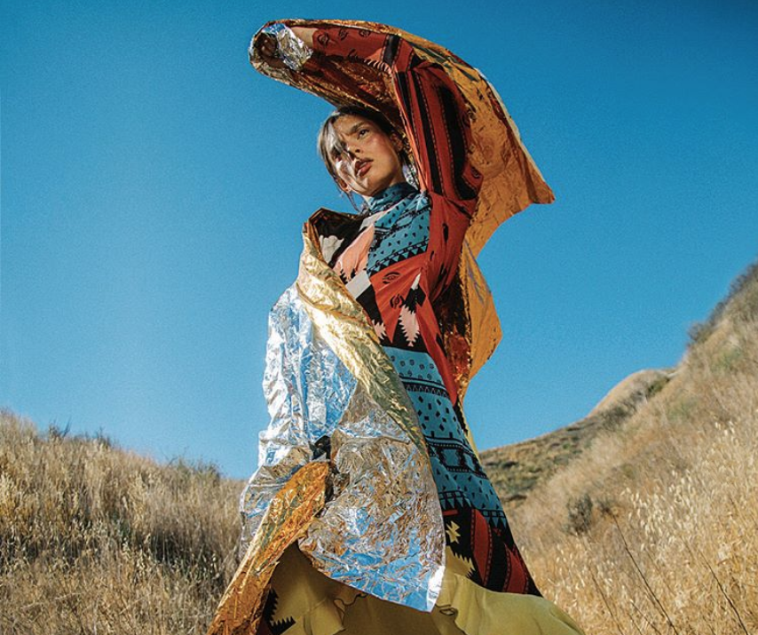

¿Qué es mujer afrodescendiente? Las mujeres afrodescendientes representan uno de los grupos en situación de mayor vulnerabilidad frente a la salud. Las mujeres afrodescendientes al sufrir tanta discriminación o no tener la información, no se asumen sujetas de derechos y les cuesta más exigir una atención y cuidados de su salud.
Son reconocidas como las protectoras y guardianas de los valores culturales y garantes de la permanencia de sus pueblos.
